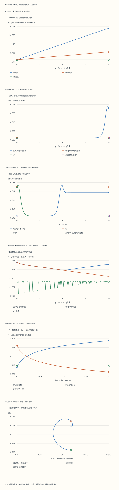

本页目录
场论计算桥 01 · 从关联函数到散射：把四条外腿逐项算清
先修：散射与 Born 近似、Feynman 图、路径积分。本讲目标：从四点函数得到标量散射振幅，保留复数相位，核对留数，并分清代数相消和物理极限。采用 \(\hbar=c=1\)、度规 \((+,-,-,-)\)。
1. 先明确终点：关联函数、振幅和截面是三个量
四点时序函数 \(G^{(4)}=\langle\Omega|T\phi(x_1)\phi(x_2)\phi(x_3)\phi(x_4)|\Omega\rangle\) 从四次场插入出发。它含有粒子从插入位置传播到相互作用区域的过程。散射实验则从远处准备好的粒子态出发，比较相互作用前后的渐近态。
首先取完全连通部分 \(G_c^{(4)}\)。自由场也有非零四点函数，因为 Wick 定理给出三种两点函数乘积；这些互不相连的传播并不构成四个外态通过同一次相互作用发生散射。去除真空气泡的归一化也很重要，但“没有真空气泡”还不等于“四个外点完全连通”。
采用单粒子态归一化
由此定义的 \(\mathcal M\) 是约化振幅。截面还需要 \(|\mathcal M|^2\)、末态相空间、入射流强以及相同末态粒子的计数。不能把图上的一条曲线直接叫“碰撞概率”。
先检查一个极端情形。 自由理论中 \(G_c^{(4)}=0\)，所以相互作用部分 \(S-1\) 的四外态振幅为零；这不要求整个 \(G^{(4)}\) 为零。
2. 稳定粒子怎样出现在二点函数里
若标量场能产生一个稳定单粒子态，令 \(\langle\Omega|\phi(0)|\mathbf p\rangle=\sqrt Z\)。在二点函数中插入完整能量本征态，单粒子贡献在动量空间形成孤立极点：
极点位置给出物理质量，系数 \(Z\) 给出这个场与该单粒子态的重叠强度。多粒子连续谱一般还会带来阈值与割线，不能把全部传播子都替换成一个任意修正系数。
这里需要孤立、稳定、可用作渐近外态的粒子。有限寿命共振的内部极点不自动给出同样的外部粒子；无质量长程相互作用、红外问题、约束与禁闭也需要另外处理。\(i0\) 是分布的边界值处方，后面实验里的有限 \(i\eta\) 只是一个数值调节量，不是测得的粒子宽度。
3. 把四条外腿和顶点的每个 i 留下来
取 \(\mathcal L_{\rm int}=-\lambda\phi^4/4!\)。树级 \(Z=1\)，一次顶点的 \(4!\) 种收缩抵消拉氏量中的分母，顶点因子为 \(-i\lambda\)。四个动量都记为流入，物理出射动量因此要取负号，满足 \(\sum_i p_i=0\)。
先提出公共的动量守恒 delta。每条腿乘逆自由传播子 \((p_j^2-m^2+i0)/i\)，四次相消后得到 \(-i\lambda\)。与 \(i\mathcal M\) 对照：
这是逆传播子的代数相消。不要先把每条传播子代成 \(1/0\)，也不要对 delta 函数做普通数值除法。严格的 LSZ 约化用渐近场、波包和分布极限把这套计算与散射态联系起来。

4. 完整传播子截肢之后，为什么还要留数
把四条完整传播子去掉后得到的核记为 \(\Gamma_{\rm amp}\)。四点函数在四个单粒子极点附近的最强极点项为 \(\prod_j\widetilde G^{(2)}(p_j)\,\Gamma_{\rm amp}\)。LSZ 每条腿使用 \((p_j^2-m_{\rm phys}^2)/(i\sqrt Z)\) 提取极点，于是每条腿剩下 \(\sqrt Z\)：
“截肢核”这个名称本身不足以决定是否再乘 \(Z^2\)。有的约定已经把外态归一化包括在核里；那就不能再乘一次。本讲的 \(\Gamma_{\rm amp}\) 明确指去掉完整传播子、尚未乘外态留数的核。
若四条外腿对应不同稳定标量粒子，因子改为 \(\prod_j\sqrt{Z_j}\)；混合场与自旋场还要使用相应矩阵或波函数。本页只计算单种标量的四外态情形。
5. 一个可以完整复算的局部极点模型
为把代数与数值分开，提出固定参考质量 \(\mu_*>0\) 的单位幂，定义 \(\delta_j=(p_j^2-m^2)/\mu_*^2=w_j\delta\)，并把公共动量 delta 提出。下面所有输入都是无量纲数：
\(R\) 是两点函数的局部正则项，\(B\) 是四点函数的一个完全正则项。它们让我们检验“极点之外还有东西”怎样影响有限离壳计算。真实四点函数也可以含有只有部分外腿极点的项；常数 \(B\) 只是一个明确的例子，没有代表全部可能余项。
默认 \(\lambda=0.2,Z=1,R=B=0,w_j=1,\delta=0.1\)，且 \(\eta=10^{-12}\)。当 \(\eta/\delta\) 很小时，未截肢、截三条腿、截四条腿的模分别接近 \(2000,2,0.2\)。近似值源于有限调节量；完整表格保留实际复数。
单位检查。 恢复参考单位后，\(D\) 带 \(\mu_*^{-2}\)，\(G\) 带 \(\mu_*^{-8}\)，截去 \(k\) 条腿的核带 \(\mu_*^{-8+2k}\)。把各自单位提出后可以比较数值的离壳趋势，但不能把不同 \(k\) 的模当作具有同一物理量纲的截面。
交互实验：先完成四项预测，再展开复数账本。默认结果与六份固定记录在下方保留。
无脚本对照：六份固定记录保留全部复数外腿、路径与换场扫描。复数格式为[实部, 虚部]，数值已提出各自的参考质量单位。

| 预设 | Z | Γ | Z²Γ | 实分子提取 | 极点目标iM | 换场后Z′²Γ′ |
|---|---|---|---|---|---|---|
| default | 1 | [-1.0842022e-27, -0.2] | [-1.0842022e-27, -0.2] | [-8e-12, -0.2] | [0, -0.2] | [-1.0842022e-27, -0.2] |
| residue | 0.5 | [-1.0842022e-27, -0.2] | [-2.7105054e-28, -0.05] | [-2e-12, -0.05] | [0, -0.05] | [-2.7105054e-28, -0.05] |
| path | 1 | [0, -0.2] | [0, -0.2] | [0, 0.05] | [0, -0.2] | [0, -0.2] |
| regular | 1 | [-1.0086031e-27, -0.2] | [-1.0086031e-27, -0.2] | [-1.3824e-11, -0.41472] | [0, -0.2] | [-1.0086031e-27, -0.2] |
| rescale | 0.5 | [-2.5720165e-14, -0.1992284] | [-6.4300412e-15, -0.049807099] | [-3.456e-12, -0.10328] | [0, -0.05] | [-6.4300412e-15, -0.049807099] |
| zero | 1 | [-4.9673706e-15, 0.00013660269] | [-4.9673706e-15, 0.00013660269] | [0, 0.0002] | [0, 0] | [-4.9673706e-15, 0.00013660269] |
下载六份完整记录。零复数相位不适用；正则项造成的传播子零点不当作单粒子极点。
6. 三种看起来相近的计算，有限参数下并不相同
完整外腿截肢为 \(\Gamma=G/\prod_jD_j\)。本模型中 \(\Gamma=K+iB/\prod_jD_j\)，所以有限离壳时存在 \(B\) 的修正。只有在适当的极点极限下才得到 \(K\)。
实验另外计算
\(L_{\rm reg}\) 可以在有限 \(\eta\) 下代数相消纯极点分母；\(L_{\rm real}\) 则保留了 \(\delta_j/(\delta_j+i\eta)\)。两者在正则项存在时仍有有限离壳修正。比较 \(L_{\rm real},L_{\rm reg},Z^2\Gamma\) 时，先看定义，再看何种极限使它们相同。
误差图画的是实际浮点结果与目标极点系数的差。接近机器精度后的小幅起伏或精确零可能来自舍入；它们不是新的物理修正，也不是严格数值误差界。复平面曲线连接193个明确采样点，完整数值保留在表格和下载中。
若在 \(\eta=0\) 的离壳代数式中，\(R\) 使局部模型的 \(D_j\) 恰好为零，就不能再作除以该 \(D_j\) 的运算；实分子提取仍可直接由 \(G\) 计算。那是这个局部模型在极点之外的零点，不是目标单粒子极点。不能用零点附近很大的除法结果宣布发现新的散射共振。
7. 为什么“两个数都很小”还不够
先取 \(R=B=0\)、四条相同离壳量，实分子提取变成
先在离壳处令 \(\eta\to0\)，再令 \(\delta\to0\)，得到目标 \(-i\lambda Z^2\)。反过来，在固定 \(\eta>0\) 时先令 \(\delta\to0\)，得到零。若沿 \(\eta=c\delta\) 一起接近，极限为 \(-i\lambda Z^2/(1+ic)^4\)。尤其 \(c=1\) 时，因子为 \(-1/4\)，既改变模也改变方向。
不同权重时因子变成 \(\prod_j w_j/(w_j+ic)\)。实验的“路径”图把固定 \(\eta\)、\(\eta=\delta\)、\(\eta=\delta^2\) 和先取 \(\eta=0\) 的离壳代数值放在一起。
这些数值路径揭示了普通函数的极限不能任意交换，并没有用一个滑块证明或否定 LSZ 定理。定理的散射态、分布处方与波包极限仍须单独建立。
8. 换一个场的大小，物理结果为什么不变
作常数场重定义 \(\phi'=\alpha\phi\)，其中 \(\alpha>0\)。四次场插入使 \(G'=\alpha^4G\)，两点函数使 \(D'_j=\alpha^2D_j\)，留数变为 \(Z'=\alpha^2Z\)。因此
在本模型中还须同时取 \(R'=\alpha^2R,K'=\alpha^{-4}K,B'=\alpha^4B\)。这些不同幂次来自它们所处的位置；并不是所有参数都乘同一个系数。实分子提取也不变，因为四个 \(1/\sqrt{Z'}\) 因子合计提供 \(\alpha^{-4}\)。
“换场”预设展示的是同一个模型的不同写法；单独拖动 \(Z\)、保持 \(K\) 不变则改变了模型的目标振幅。本页局部模型没有借用某个特定场规范的谱归一化去宣称任意重标定后都有 \(Z\le1\)。
9. 八个可以逐步核对的练习
题一：从定义找符号。 树级顶点为 \(-0.3i\)，求 \(\mathcal M\) 与 \(|\mathcal M|^2\)。
先与iM比较，再取模
由 \(i\mathcal M=-0.3i\) 得 \(\mathcal M=-0.3\)，所以 \(|\mathcal M|^2=0.09\)。后者没有相空间和流强，仍不是总截面。
题二：四条留数。 完整传播子截肢核为 \(-ig\)，每条腿 \(Z=1/2\)。
四个平方根相乘
四条腿给 \((\sqrt{1/2})^4=1/4\)，故 \(i\mathcal M=-ig/4\)，\(\mathcal M=-g/4\)。这里的核尚未包含外态归一化；若定义已包含，再乘会重复计数。
题三：漏一条腿。 令 \(Z=1,R=B=0\) 并取 \(\eta=0\) 的离壳代数式。离壳量减半后，截三条腿与截四条腿的模怎样变化？
先数剩余分母
截三条腿还剩一个 \(1/\delta\)，模翻倍；四条全部截去只剩 \(|-i\lambda|\)，不随 \(\delta\) 变化。这个比较使用分别提出单位后的数值，不是两种截面的比。
题四：相同小量。 取默认 \(\lambda=0.2,Z=1,R=B=0\)，沿 \(\eta=\delta\) 求实分子提取的极限。
保留复数的四次幂
\((1+i)^2=2i\)，所以 \((1+i)^4=-4\)，其倒数为 \(-1/4\)。因此极限为 \((-0.2i)(-1/4)=+0.05i\)。它不是目标 \(-0.2i\)，不能因为两参数都接近零就忽略比值。
题五：完整换场。 取 \(\alpha=2\)，写出 \(G,D,Z,\Gamma\) 的缩放，并验证归一化结果。
分别数场插入和传播子
\(G'=16G,D'=4D,Z'=4Z,\Gamma'=\Gamma/16\)。于是 \(Z'^2\Gamma'=(4Z)^2\Gamma/16=Z^2\Gamma\)。只把 \(G\) 乘16而保持其余量不变不叫完整换场。
题六：正则四点项。 令 \(R=0,\eta=0,w_j=1\)，求 \(B\) 对 \(Z^2\Gamma\) 的贡献。
先计算四条外腿的乘积
\(\prod_jD_j=(iZ/\delta)^4=Z^4/\delta^4\)，所以 \(Z^2\Gamma=Z^2K+iB\delta^4/Z^2\)。这个正则贡献随 \(\delta^4\) 消失；有限离壳时却未必为零。\(\lambda=0,B\ne0\) 时，有限关联函数仍可非零，而该模型的极点振幅为零。
题七：自由场的四点函数。 四点函数非零是否足以证明存在四粒子相互作用散射？
区分断开的传播与完全连通
不够。自由场的三种两点函数乘积使完整四点函数非零，但完全连通四点函数为零。散射约化要先分清完全连通部分、真空归一化以及 \(S-1\) 的定义。
题八：内部极点。 截肢是否也应乘掉相互作用内部的传播子？
从外腿定义判断
不应。外腿传播把场插入接到相互作用区域；内部传播子描述相互作用过程本身，决定振幅的内部极点、阈值和因子化。把内部传播子也消掉，会改变所计算的振幅。
10. 带着完整账本走向下一讲
本讲的验收不是记住“去掉外腿”四个字，而是能写出：完全连通函数、每腿极点及留数、所采用的截肢定义、极限条件，以及最终 \(i\mathcal M\) 的归一化。遇到不稳定外态、红外问题或混合场时，应重新核对定理的条件。
下一步用重整化积分与减法处理圈图，再读散射振幅与因子化。关联函数到振幅的连续训练检查各份账本是否一致；同一φ⁴模型的单圈散射训练进一步连接二点反项、三通道泡图、阈值虚部和物理截面。
一手教学来源：David Tong，Interacting Fields，第3.7节，讨论时序关联、散射矩阵与 LSZ 约化。本页的常数正则项、有限调节量和数值路径是独立声明的教学算例；不声称从这个局部模型构造出了完整量子场论。资料核查：2026-09-13。